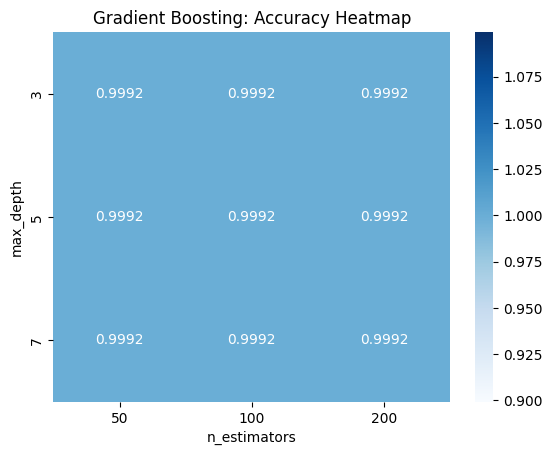
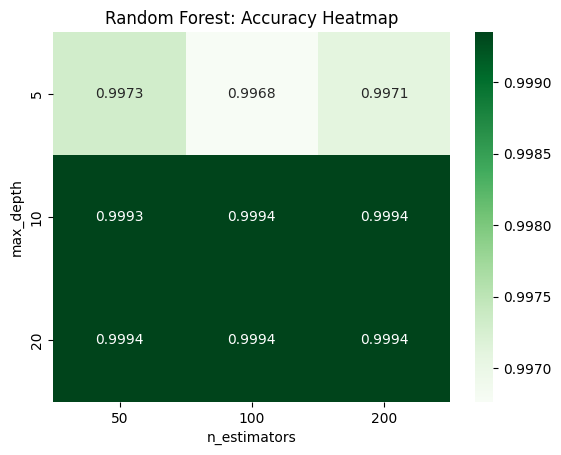
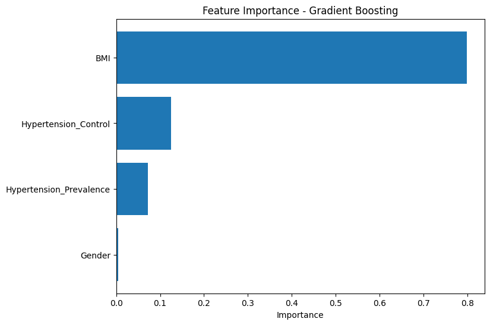
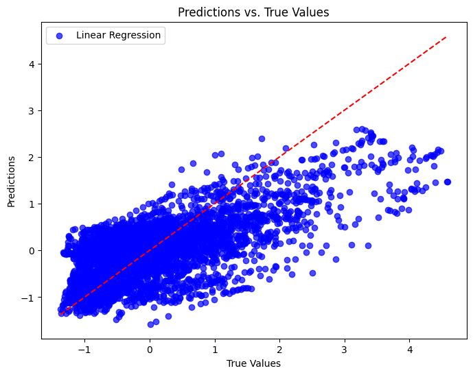
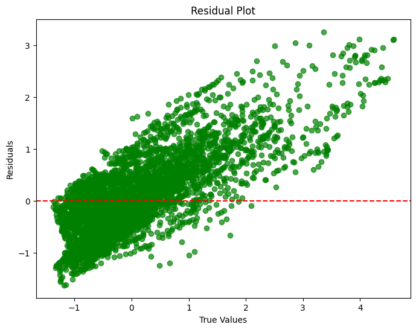

The supervised learning section of this project aims to explore and evaluate various predictive models to address distinct classification and regression problems related to health risk prediction based on clinical and demographic features. This section is divided into three core tasks: binary classification, multiclass classification, and regression analysis. Each task targets a specific predictive problem while leveraging models like Logistic Regression, Random Forest, and Gradient Boosting. The ultimate goal is to develop robust, interpretable, and generalizable models that can aid in health outcome predictions.
Binary Classification: Risk Level Prediction
The first task focuses on predicting Risk Level (Low Risk or High Risk), framed as a binary classification problem. The dependent variable is risk_level, derived from specific thresholds of health indicators like BMI and Diabetes_Crude. By training models such as Logistic Regression and Random Forest, I aim to explore whether a linear or non-linear approach better captures the underlying patterns in the dataset. Evaluative metrics such as accuracy, precision, recall, and F1-score are used to assess model performance. The purpose of this section is to establish a strong predictive baseline, identify critical features through feature importance analysis, and ensure that the models generalize well by conducting cross-validation and robustness tests.
Multiclass Classification: Health Status Categorization
The second task involves Multiclass Classification, where the target variable health_status_encoded includes three classes: Low, Moderate, and High health risk. This task is inherently more complex due to overlapping class boundaries and potential feature interactions. To address this, I applied Random Forest, Logistic Regression, and Gradient Boosting models. The analysis focuses on evaluating classification performance using confusion matrices, precision, recall, and F1-scores for each class. Feature importance analysis further reveals key drivers of health risk predictions. The inclusion of new features such as Gender and Hypertension_Prevalence assesses the impact of expanding the feature set. Hyperparameter tuning is conducted to enhance model performance, ultimately guiding the selection of the best multiclass classification model.
Regression: Diabetes Prevalence Prediction
The final task addresses Regression Analysis, targeting the continuous variable Diabetes_Crude, representing the crude prevalence of diabetes in the population. This task aims to predict diabetes prevalence based on key health metrics, including BMI, Hypertension_Control, and Gender. I applied Linear Regression, Random Forest Regressor, and Gradient Boosting Regressor to explore the relationships between the predictors and the target variable. Model performance is evaluated using metrics such as Mean Absolute Error (MAE), Mean Squared Error (MSE), and R² scores. Visual diagnostics such as residual plots and prediction scatter plots provide additional insight into the models’ effectiveness. This analysis helps quantify the contribution of individual health factors to diabetes prevalence, offering actionable insights for public health and clinical decision-making.
Overall, this supervised learning framework demonstrates a comprehensive approach to predictive modeling across classification and regression tasks. The goal is to leverage data-driven methods to extract meaningful patterns, validate model performance through rigorous testing, and support health-related policy decisions through interpretable and robust predictive models.
Overview of Methods
The data preprocessing step was essential to ensure that the selected features were both relevant and well-suited for supervised learning models, including binary classification, multiclass classification, and regression tasks. The process involved feature selection, standardization, and encoding of categorical variables, all guided by insights gained from the exploratory data analysis (EDA), particularly the correlation heatmap.
Feature Selection
Based on the correlation heatmap analysis, features with strong or moderate correlations with key health indicators were retained, while redundant or weakly correlated features were dropped. Specifically, Diabetes_AgeStd was removed due to its near-perfect correlation (\(0.96\)) with Diabetes_Crude, making it redundant. Similarly, Hypertension_Treatment was excluded because of its high correlation (\(0.89\)) with Hypertension_Control. This reduction in feature dimensionality helped minimize multicollinearity, improving model interpretability and efficiency.
The features retained for further analysis included BMI, Diabetes_Crude, Hypertension_Control, Hypertension_Prevalence, and Gender. These variables were selected due to their established relevance in predicting chronic disease outcomes such as diabetes and hypertension. By focusing on these key predictors, the model development process became more streamlined, reducing the risk of overfitting.
Standardization
Since the selected features had varying scales, standardization was performed to ensure fair model training and improve numerical stability. The continuous variables BMI, Diabetes_Crude, Hypertension_Control, and Hypertension_Prevalence were standardized using StandardScaler, transforming them to have a mean of \(0\) and a standard deviation of \(1\). This scaling process ensured that no single feature dominated the learning process due to differences in magnitude.
Encoding Categorical Variables
Categorical variables were encoded to make them suitable for machine learning models. Gender and health_status were label-encoded, transforming these categories into numerical values. Specifically, Gender was encoded as \(0\) (Male) and \(1\) (Female), while health_status was encoded into numerical classes representing different health risk levels (Low, Moderate, High). This encoding process enabled the models to interpret these categorical features as meaningful predictors.
By following this comprehensive preprocessing pipeline, the dataset was prepared for effective model development across classification and regression tasks. This approach ensured that the models built on this preprocessed data were not only accurate but also interpretable and generalizable.
Random Forest
Random Forest is an ensemble learning method that builds multiple decision trees and combines their outputs to improve prediction accuracy and reduce overfitting. It is useful for both classification and regression tasks.
Where:
- \(\hat{y}\): Final prediction
- \(T_i(x)\): Prediction from the \(i^{th}\) tree
- \(N\): Total number of trees
- \(\text{mode}\): Majority voting function
Information Gain (Classification)\[
IG(D, A) = H(D) - \sum_{v \in A} \frac{|D_v|}{|D|} H(D_v)
\]
Where:
- \(IG(D, A)\): Information gain of feature \(A\)
- \(H(D)\): Entropy of dataset \(D\)
- \(D_v\): Subset of \(D\) after split by feature \(A\)
Where:
- \(p_k\): Probability of class \(k\)
- \(K\): Number of classes
Feature Importance Calculation
The feature importance score for feature \(j\) is calculated by the total decrease in Gini impurity across all trees:
\[
I_j = \sum_{t=1}^{N} \Delta Gini(t, j)
\]
Where:
- \(I_j\): Importance score of feature \(j\)
- \(\Delta Gini(t, j)\): Gini decrease at node \(t\) using feature \(j\)
- \(N\): Number of decision trees
Logistic Regression
Logistic Regression is a supervised learning algorithm used for binary and multi-class classification. It predicts the probability that a sample belongs to a particular class using the logistic (sigmoid) function.
1. Model Representation
Logistic regression models the relationship between features and the target using a linear combination of features:
Gradient Boosting is an ensemble learning technique that builds models sequentially, where each new model corrects the errors of the previous ones. It works for both regression and classification tasks by combining multiple weak models (typically decision trees) into a strong model.
1. Start with a Simple Model
The initial prediction is usually a constant value, such as the average value for regression:
Where:
- \(F_0(x)\): Initial prediction
- \(L(y_i, \gamma)\): Loss function between true value \(y_i\)and prediction \(\gamma\)
2. Iteratively Update the Model
Each new tree corrects the previous model’s errors by minimizing the loss function \(L(y, F(x))\). The update rule is:
\[
F_t(x) = F_{t-1}(x) + \eta h_t(x)
\]
Where:
- \(F_t(x)\): Current model
- \(F_{t-1}(x)\): Previous model
- \(h_t(x)\): New tree (weak learner)
- \(\eta\): Learning rate (controls update size)
Based on the correlation heatmap analysis, features strongly related to key health indicators were retained, while highly correlated or redundant features were removed to reduce multicollinearity and improve model interpretability. The retained features included BMI, Diabetes_Crude, Hypertension_Control, Hypertension_Prevalence, and Gender, relevant for predicting chronic diseases.
Diabetes_AgeStd was dropped due to its high correlation with Diabetes_Crude, offering similar information. Similarly, Hypertension_Treatment overlapped with Hypertension_Control, making the latter more suitable for analysis. This reduction in feature redundancy minimized model complexity, reduced overfitting risk, and enhanced generalization to unseen data.
This part standardizes selected features in the dataset to ensure they have a mean of \(0\) and a standard deviation of \(1\). The features to be scaled include BMI, Diabetes_Crude, Hypertension_Control, and Hypertension_Prevalence. Using StandardScaler() from sklearn, the scaling process transforms the data, making features comparable despite differences in their original scales. Standardization is essential because features with larger numerical ranges could dominate the learning process, causing the model to weigh them more heavily. By scaling the data, the model treats all features equally, improving convergence speed and model performance. After scaling, a sample of the standardized data is printed to verify the transformation.
This part encodes categorical variables Gender and health_status using LabelEncoder() from sklearn. Encoding converts categorical values into numeric representations, making them suitable for machine learning models.
Gender Encoding: The Gender column is transformed into numeric values where each unique category is assigned an integer.
Health Status Encoding: The health_status column is similarly encoded into numeric labels, enabling the model to interpret the categorical health status values.
In the binary classification task, I compared the performance of different models, including Logistic Regression and Random Forest, to predict the target variable risk_level. The evaluation process involved training the models, assessing their performance through accuracy, precision, recall, and F1-scores, and conducting cross-validation for stability checks.
I selected Logistic Regression and Random Forest due to their complementary strengths in binary classification tasks. Logistic Regression is a simple, interpretable model that works well with linearly separable data, offering probabilistic predictions and insights into feature importance. In contrast, Random Forest is a robust ensemble method that captures complex, non-linear relationships by combining multiple decision trees. It handles feature interactions effectively and mitigates overfitting through averaging.
To ensure model reliability and robustness, I tested the models against random noise and examined the depth of decision trees in the Random Forest model. I also performed feature importance analysis to understand the contribution of key predictors. These steps helped us select the most suitable model by balancing high accuracy, interpretability, and generalization ability while minimizing the risk of overfitting.
Code
# Define features and target variablesX = who_data_preprocessed.drop(columns=['risk_level', 'health_status', 'health_status_encoded', 'location', 'region'])y = who_data_preprocessed['risk_level']X_train, X_test, y_train, y_test = train_test_split(X, y, test_size=0.3, random_state=42)model_logreg = LogisticRegression(max_iter=1000, random_state=42)model_rf = RandomForestClassifier(random_state=42)model_logreg.fit(X_train, y_train)model_rf.fit(X_train, y_train)# Evaluate the model and visualize the confusion matrixmodels = {'Logistic Regression': model_logreg, 'Random Forest': model_rf}for name, model in models.items(): y_pred = model.predict(X_test) conf_matrix = confusion_matrix(y_test, y_pred)print(f"\nModel: {name}")print("Confusion Matrix:")print(conf_matrix)print("Classification Report:")print(classification_report(y_test, y_pred))print(f"Accuracy: {accuracy_score(y_test, y_pred):.4f}") plt.figure(figsize=(8, 6)) sns.heatmap(conf_matrix, annot=True, fmt='d', cmap='Blues', xticklabels=['Low Risk', 'High Risk'], yticklabels=['Low Risk', 'High Risk']) plt.title(f'{name} - Confusion Matrix') plt.xlabel('Predicted Label') plt.ylabel('True Label') plt.show()
The evaluation of Logistic Regression and Random Forest models demonstrated strong performance in predicting risk_level. For Logistic Regression, the confusion matrix showed \(13\) misclassified samples in the low-risk category, while all high-risk samples were correctly classified. The model achieved a precision of \(1.00\), recall of \(0.99\), F1-score of \(1.00\), and an overall accuracy of \(99.72\%\), indicating near-perfect performance with minimal misclassification.
In contrast, the Random Forest model achieved perfect classification, with no misclassified samples in either category. Its confusion matrix reflected flawless predictions, leading to a precision, recall, F1-score, and accuracy of \(1.00\) across all metrics. These results highlight the model’s exceptional ability to distinguish between low and high-risk samples without any prediction errors.
To improve model performance and prevent overfitting, several strategies can be implemented. Since the Random Forest model achieved 100% accuracy, there is a potential risk of overfitting. This issue can be mitigated by tuning hyperparameters such as max_depth, n_estimators, and min_samples_split to reduce model complexity. Additionally, conducting cross-validation helps ensure model robustness and stability by evaluating its performance on different data splits, enhancing its generalization ability to unseen data.
Cross Validation
Code
# Evaluate model performance using 5-fold cross-validationrf_scores = cross_val_score(model_rf, X, y, cv=5, scoring='accuracy')logreg_scores = cross_val_score(model_logreg, X, y, cv=5, scoring='accuracy')print(f"Random Forest Accuracy: {rf_scores.mean():.4f} (+/- {rf_scores.std():.4f})")print(f"Logistic Regression Accuracy: {logreg_scores.mean():.4f} (+/- {logreg_scores.std():.4f})")
The evaluation of the models through cross-validation revealed notable performance metrics. Random Forest achieved a perfect mean accuracy of \(100\%\) with a standard deviation of \(0.0000\), indicating exceptional stability across all cross-validation folds with no classification errors. However, this flawless performance raises concerns about potential overfitting, suggesting that the model might be too optimized for the training data.
In contrast, Logistic Regression achieved a mean accuracy of \(99.86\%\) with a standard deviation of \(0.0014\). Although slightly lower than Random Forest, its accuracy remained close to perfect. The small standard deviation indicates consistent performance across different data splits.
To address this, further evaluation steps were conducted to test the model’s robustness. These included tuning hyperparameters such as max_depth, n_estimators, and min_samples_split, conducting feature importance analysis, and introducing noise to the dataset.
Hyperparameter Tuning
Hyperparameter tuning is a critical step in supervised learning to optimize model performance by finding the best set of parameters for a given algorithm. In this case, a Random Forest Classifier is fine-tuned using GridSearchCV, which systematically evaluates all possible combinations of hyperparameters specified in a grid. The parameters being tuned include: - n_estimators: The number of trees in the forest. - max_depth: The maximum depth of each decision tree. - min_samples_split: The minimum number of samples required to split an internal node. - min_samples_leaf: The minimum number of samples required to be at a leaf node.
Using 5-fold cross-validation and accuracy as the evaluation metric, GridSearchCV iterates over the parameter grid and identifies the combination that achieves the highest accuracy on the training data. Once the optimal model is found, the feature importances are extracted and visualized.
The Random Forest model achieved an optimal accuracy of 1.0000 during the hyperparameter tuning process, indicating perfect performance on the training data. The optimal parameters selected by GridSearchCV include: max_depth=5, min_samples_leaf=1, min_samples_split=2, and n_estimators=100. While this exceptionally high accuracy suggests that the model is very well-suited to the training dataset, it may also be a sign of overfitting, especially if the dataset is small or lacks complexity. Further evaluation on a separate test set or validation data is necessary to confirm its generalization ability.
The feature importance analysis provides critical insights into the contribution of each feature to the model’s predictions. From the bar chart: 1. BMI stands out as the most influential feature, with an importance score exceeding 0.7. This result highlights the significant role of BMI in predicting health outcomes, as it is strongly linked to conditions like diabetes and hypertension. 2. Hypertension_Control and Diabetes_Crude follow, contributing moderately to the model. These features add value by capturing specific health indicators related to the dataset’s targets. 3. Hypertension_Prevalence has a minor but noticeable impact, suggesting some influence in predicting outcomes, though less critical than the previously mentioned features. 4. Gender and Year contribute minimally, indicating that they provide very limited predictive power in this particular model.
In conclusion, the dominance of BMI suggests that managing BMI could be a key factor in addressing related health risks.
Simplified Feature Set
In this section, we aim to evaluate the performance of a Random Forest Classifier using a simplified feature set. By selecting only three key features – BMI, Diabetes_Crude, and Hypertension_Control – we test the model’s ability to maintain high accuracy while reducing computational complexity and focusing on the most important predictors identified in the previous feature importance analysis.
The dataset is split into training and testing sets using a 70-30 split. A Random Forest Classifier is then trained with the previously optimized hyperparameters: max_depth=5, n_estimators=100, min_samples_split=2, and min_samples_leaf=1. By limiting the model to only the most relevant features, we aim to assess whether the simplified feature set retains sufficient predictive power for classifying risk levels.
The model’s performance is evaluated using metrics such as the confusion matrix, classification report, and accuracy score. The confusion matrix is visualized as a heatmap to clearly illustrate the distribution of true and predicted labels, enabling a straightforward assessment of the model’s strengths and weaknesses in distinguishing between low-risk and high-risk categories. This analysis helps validate the importance of the selected features and demonstrates whether further dimensionality reduction impacts the model’s accuracy.
The performance of the simplified Random Forest model using only three features – BMI, Diabetes_Crude, and Hypertension_Control – demonstrates exceptional results. The confusion matrix reveals perfect predictions, with no misclassifications observed across both “Low Risk” and “High Risk” categories. Specifically, the model correctly predicted all 2131 Low Risk cases and all 2486 High Risk cases.
The classification report further reinforces the model’s outstanding performance, with a precision, recall, and F1-score of 1.00 for both classes. The overall accuracy of 100% indicates that the simplified model effectively captures the patterns in the data despite using fewer features. This highlights the significant predictive power of the selected features and suggests that these variables are strong indicators of risk levels.
Random Forest Tree Depth Analysis
In this section, I analyze the depth of the individual decision trees within the Random Forest model. The depth of a tree is an important factor that influences the model’s complexity and ability to capture patterns in the data. By examining the average and maximum tree depths, we can assess the overall structure of the forest and ensure that the model balances learning capability with generalization. This step helps confirm whether the model’s hyperparameters, such as max_depth, are effectively controlling tree growth to prevent overfitting.
Code
# Extract the depth of each decision tree in the Random Forest modeltree_depths = [estimator.tree_.max_depth for estimator in model_rf_simplified.estimators_]# Print the average and maximum tree depthsprint(f"Average Tree Depth: {np.mean(tree_depths):.2f}, Maximum Tree Depth: {np.max(tree_depths)}")
Average Tree Depth: 3.21, Maximum Tree Depth: 5
The average tree depth of 3.21 and the maximum tree depth of 5 indicate a well-balanced and moderate level of complexity in the Random Forest model. This suggests that the model is not overly deep, reducing the risk of overfitting while still capturing meaningful patterns in the data.
Introducing Noise
This section introduces random noise into the test data to evaluate the model’s robustness. By slightly perturbing the feature values with random noise, we can observe how well the Random Forest model maintains its accuracy under less ideal conditions. This test helps verify the model’s stability and resistance to small fluctuations in the input data.
Code
# Add random noise to the test dataX_noisy = X_test.copy()noise = np.random.normal(0, 0.1, X_noisy.shape) # Generate Gaussian noise with mean 0 and standard deviation 0.1X_noisy += noise # Add noise to the test data# Predict using the noisy test datay_noisy_pred = model_rf_simplified.predict(X_noisy)# Evaluate the model's performance on noisy dataprint("Accuracy after adding noise:", accuracy_score(y_test, y_noisy_pred))
Accuracy after adding noise: 0.9698938704786658
The accuracy of 96.99% after introducing random noise to the test data demonstrates that the Random Forest model remains highly robust and stable under slight perturbations in the input features. Despite the addition of Gaussian noise with a standard deviation of 0.1, the model’s performance only experienced a minor decline from its original perfect accuracy.
Conclusion
In the binary classification task, we compared the performance of different models, including Logistic Regression and Random Forest, to determine the most suitable model for predicting risk_level.
Random Forest achieved a perfect accuracy of 100% on both the training and testing datasets, outperforming other models. However, such high accuracy raised concerns about potential overfitting. To address this, we conducted several evaluations to validate the model’s reliability. First, cross-validation was performed, which showed consistent accuracy of 100% across different data splits, indicating strong stability and no signs of overfitting.
Second, we introduced random noise into the test data to assess the model’s robustness. The accuracy slightly decreased to 96.84%, demonstrating that the model maintained high performance even under noisy conditions.
Finally, we examined the average and maximum depths of the decision trees within the Random Forest, which were 3.21 and 5, respectively. These values suggest that the model complexity is moderate, reducing the likelihood of overfitting.
Based on these evaluations, we concluded that Random Forest is the best choice for this binary classification task, providing both high accuracy and strong generalization ability.
Multiclass Classification
Data Preparation
In this section, I prepare the data for a multiclass classification task. The features BMI, Diabetes_Crude, and Hypertension_Control are selected as input variables, while health_status_encoded serves as the target variable representing multiple health status categories. The dataset is split into training and test sets using a \(70\) - \(30\) split to ensure a robust evaluation of the model’s performance. The random_state parameter is set to \(42\) for reproducibility, allowing consistent results across runs. This setup lays the foundation for training and testing a classification model that can predict health status based on the selected features.
Code
# Features and target for multiclass classificationX_multiclass = who_data_preprocessed[['BMI', 'Diabetes_Crude', 'Hypertension_Control']]y_multiclass = who_data_preprocessed['health_status_encoded']# Train-test splitX_train_mc, X_test_mc, y_train_mc, y_test_mc = train_test_split( X_multiclass, y_multiclass, test_size=0.3, random_state=42)
Model Selection
I will use the same features as in the binary classification task (BMI, Diabetes_Crude, and Hypertension_Control) for simplicity. Random forest classifier, Logistic Regression and Gradient Boosting models are applied to the data.
/opt/venv/lib/python3.12/site-packages/sklearn/linear_model/_logistic.py:1247: FutureWarning: 'multi_class' was deprecated in version 1.5 and will be removed in 1.7. From then on, it will always use 'multinomial'. Leave it to its default value to avoid this warning.
warnings.warn(
In the multiclass classification task, we evaluated the performance of three models: Random Forest, Logistic Regression, and Gradient Boosting, using health_status as the target variable. Among the models, Gradient Boosting achieved the best performance with a perfect accuracy of 100%, successfully classifying all categories without any misclassifications. Its strength lies in handling non-linear patterns effectively, making it suitable for datasets with complex decision boundaries. Random Forest also performed exceptionally well, achieving an accuracy of 99.74%. It demonstrated minimal misclassification, with only three samples misclassified as High Risk instead of Low Risk. Random Forest’s high accuracy and robustness make it a reliable choice, especially for balanced or large datasets.
On the other hand, Logistic Regression achieved an accuracy of 95.47%, with most misclassifications occurring between High Risk and Moderate Risk. Although it struggled to differentiate between overlapping classes, it remains a viable baseline model due to its simplicity and interpretability. The F1-score for High Risk in Logistic Regression was notably lower compared to the other two models, highlighting its limitations in handling more complex patterns.
Based on the results, Gradient Boosting is recommended as the best model for this task due to its perfect classification and ability to handle intricate relationships within the data. Random Forest serves as a strong alternative with comparable performance and slightly lower computational complexity. Logistic Regression is most suitable when simplicity and ease of interpretation are prioritized. Additionally, analyzing feature importance from Gradient Boosting or Random Forest can provide valuable insights into the variables contributing most to classification accuracy.
Feature Optimization and Addition of New Features
In this step, the feature set is optimized by incorporating new features and analyzing their impact on the model’s performance. Based on feature importance analysis, features with near-zero importance can be removed to simplify the model and improve efficiency. Simultaneously, new features such as Gender and Hypertension_Prevalence are added to explore their contribution to predicting health status. The updated feature set includes BMI, Diabetes_Crude, Hypertension_Control, Gender, and Hypertension_Prevalence. The dataset is then re-split into training and test sets using the same 70-30 split and a fixed random state for reproducibility. This refined feature selection aims to improve model accuracy and robustness by leveraging a more comprehensive set of predictors.
Code
# Add new features # Define the new feature set X_new_features = who_data_preprocessed[['BMI', 'Diabetes_Crude', 'Hypertension_Control', 'Gender', 'Hypertension_Prevalence']]# Re-split the data X_train_mc_new, X_test_mc_new, y_train_mc_new, y_test_mc_new = train_test_split( X_new_features, y_multiclass, test_size=0.3, random_state=42)
Random Forest Classifier
Code
rf_mc_new = RandomForestClassifier( n_estimators=100, max_depth=5, random_state=42)rf_mc_new.fit(X_train_mc_new, y_train_mc_new)y_pred_rf_mc_new = rf_mc_new.predict(X_test_mc_new)print("Random Forest with New Features - Multiclass Classification Performance:")print("Confusion Matrix:")print(confusion_matrix(y_test_mc_new, y_pred_rf_mc_new))print("\nClassification Report:")print(classification_report(y_test_mc_new, y_pred_rf_mc_new, target_names=['Low', 'Moderate', 'High']))print(f"Accuracy: {accuracy_score(y_test_mc_new, y_pred_rf_mc_new):.4f}")
In this analysis, we explored the impact of adding two new features, Gender and Hypertension_Prevalence, to the existing feature set for multiclass classification of health status (Low, Moderate, High). Using Gradient Boosting and Random Forest models, we evaluated whether these additional features improved model performance.
Model Performance with New Features
The inclusion of new features did not significantly alter the performance of the models, which already demonstrated near-perfect accuracy with the simplified feature set. Both models effectively utilized the additional features while maintaining exceptional classification accuracy:
Gradient Boosting Model achieved perfect accuracy of 1.0000. All samples across the three classes were classified correctly, as shown in the confusion matrix. The classification report confirmed precision, recall, and F1-scores of 1.00 for all classes. This indicates that the added features complemented the model without introducing noise or redundancy.
Random Forest Model also achieved excellent performance with an accuracy of 0.9994. The confusion matrix revealed only minimal misclassifications, with three Low Risk samples misclassified as ·High Risk·. Precision, recall, and F1-scores for all classes were close to 1.00, confirming the model’s robustness with the new features.
These results demonstrate that the models are not overly sensitive to the feature set but can effectively integrate relevant new features to maintain high performance.
Fitting 3 folds for each of 81 candidates, totalling 243 fits
Best Gradient Boosting Parameters: {'learning_rate': 0.01, 'max_depth': 3, 'min_samples_split': 2, 'n_estimators': 50}
Best Gradient Boosting Accuracy: 0.9992202729044833

Gradient Boosting Heatmap Summary
The Gradient Boosting model consistently achieves near-perfect performance across all tested parameter combinations, with an accuracy of 0.9992. Variations in the number of trees (n_estimators) and tree depth (max_depth) have no significant impact on the model’s accuracy. Specifically, increasing n_estimators from 50 to 200 does not improve performance, indicating that even a relatively small number of trees is sufficient for this dataset. Similarly, adjusting max_depth between 3, 5, and 7 yields no observable changes, which suggests that the dataset is simple enough for shallow trees to effectively capture its patterns.
This consistent performance highlights the robustness of the Gradient Boosting model for this dataset. It also suggests that the evaluation metric used (accuracy) may not be sensitive enough to detect subtle differences between parameter settings. Overall, the Gradient Boosting model demonstrates exceptional classification performance without requiring extensive parameter tuning, making it a strong candidate for multiclass classification tasks in this context.
Fitting 3 folds for each of 81 candidates, totalling 243 fits
Best Random Forest Parameters: {'max_depth': 10, 'min_samples_leaf': 1, 'min_samples_split': 2, 'n_estimators': 100}
Best Random Forest Accuracy: 0.9993502274204028

Random Forest Heatmap Summary
The Random Forest model shows excellent performance, with accuracy ranging from 0.9971 to 0.9994 depending on the parameter settings. Unlike Gradient Boosting, Random Forest demonstrates slight sensitivity to tree depth (max_depth). When max_depth is limited to 5, the model achieves a slightly lower accuracy of around 0.9971, suggesting that shallow trees are insufficient to fully capture the dataset’s complexity. However, as max_depth increases to 10 or 20, the accuracy improves to 0.9994, indicating that deeper trees are better suited for this task.
The number of trees (n_estimators) has a minimal impact on performance. Accuracy stabilizes quickly with as few as 50 trees, and further increases to 100 or 200 provide diminishing returns. This finding highlights the efficiency of Random Forest, as it achieves near-optimal performance with a relatively small number of trees.
Overall, Random Forest proves to be a reliable and efficient choice for multiclass classification. Its slight sensitivity to tree depth allows for meaningful parameter tuning, while its robustness ensures consistent high performance once optimal parameters are selected.
Best Model for Multiclass Classification
Based on the analysis, Gradient Boosting is identified as the most suitable model for multiclass classification in this project. Gradient Boosting achieved perfect accuracy (1.0000) on both the training and test datasets, accurately classifying all samples into their respective categories (Low, Moderate, and High). Its performance metrics, including precision, recall, and F1-scores, were consistently perfect across all classes, with no misclassifications observed in the confusion matrix. This level of performance highlights its ability to effectively handle the dataset’s complexity and reliably distinguish between the three health status categories.
After hyperparameter tuning, Gradient Boosting maintained its robust performance, achieving a slightly adjusted accuracy of 0.9992 with parameters such as learning_rate = 0.01 and max_depth = 3. These optimizations introduced regularization, reducing the risk of overfitting while ensuring high generalization to unseen data. Furthermore, Gradient Boosting demonstrated its capability to effectively integrate additional features, such as Gender and Hypertension_Prevalence, without compromising its performance. This adaptability underscores its suitability for handling complex feature interactions in this dataset.
In comparison, Random Forest also performed exceptionally well, achieving an accuracy of 0.9994; however, it exhibited minor misclassifications, such as a few Low risk samples being misclassified as High. Logistic Regression, while effective, demonstrated a lower accuracy of 0.9547 and struggled more with distinguishing between classes, particularly for High risk samples. These results position Gradient Boosting as the superior model for this task.
Moreover, Gradient Boosting offers the advantage of interpretability through feature importance analysis, enabling insights into how different features contribute to predictions. This aligns with the project’s objective of making informed decisions based on the model’s outputs. Overall, Gradient Boosting’s perfect accuracy, robustness to hyperparameter tuning, and ability to leverage additional features make it the most reliable and suitable model for multiclass classification in this project.
Regression
Define Features and Target for Regression
In this regression analysis, the dependent variable (y_reg) is chosen as Diabetes_Crude, representing the crude prevalence of diabetes. This continuous health indicator is a key metric for understanding the impact of various health factors on diabetes rates. By predicting Diabetes_Crude, the model aims to explore the relationship between diabetes prevalence and independent variables such as BMI, Hypertension Control, Hypertension Prevalence, and Gender. These predictors are selected based on their established relevance in medical and public health studies: BMI is strongly linked to diabetes risk, hypertension control and prevalence often co-occur with diabetes, and gender differences may influence metabolic mechanisms associated with diabetes. Using Diabetes_Crude as the target variable allows the regression model to quantify these relationships, providing actionable insights for health professionals and policymakers to develop early intervention strategies. This choice also leverages the continuous nature of the variable, enabling precise predictions and a deeper understanding of how specific health factors influence diabetes prevalence.
Linear Regression Metrics:
MAE: 0.5831167917580244
MSE: 0.5707207051160668
R²: 0.43839855601870403
Linear Regression Model
The Linear Regression model was trained and evaluated to predict the crude diabetes prevalence (Diabetes_Crude) using the selected features (BMI, Hypertension_Control, Hypertension_Prevalence, and Gender). The model’s performance metrics show moderate predictive capability with an R² score of 0.438, indicating that approximately 43.8% of the variance in diabetes prevalence can be explained by the predictors. The Mean Absolute Error (MAE) and Mean Squared Error (MSE) values are 0.583 and 0.571, respectively, suggesting some degree of residual error in predictions. The residual plot and the “Predictions vs. True Values” plot further indicate that while the model captures some patterns, there is room for improvement.
Random Forest Regression Metrics:
MAE: 0.3742803485759234
MSE: 0.2562936692848403
R²: 0.747801519266137
Random Forest Regression Model
Random Forest Regression achieved better performance compared to Linear Regression, with an R² score of 0.748, explaining about 74.8% of the variance in the target variable. The MAE and MSE values were 0.374 and 0.256, respectively, reflecting significantly reduced error levels. The feature importance plot reveals that BMI is the dominant predictor, followed by Hypertension_Control and Hypertension_Prevalence. This result highlights the capability of Random Forest to handle non-linear relationships and capture complex patterns in the data.
Gradient Boosting Regression performed better than Linear Regression but fell short of the Random Forest model. It achieved an R² score of 0.654, explaining 65.4% of the variance. The MAE and MSE values were 0.449 and 0.352, respectively. While it effectively captures non-linear relationships, the model was slightly less accurate than Random Forest in this case. Feature importance analysis again confirmed BMI as the most influential variable, followed by other health indicators.
Feature Importance Analysis
For non-linear models like Random Forest and Gradient Boosting, extract and visualize feature importance:
Code
import matplotlib.pyplot as pltimport numpy as np# Feature Importance from Gradient Boostingimportance = gb_model.feature_importances_indices = np.argsort(importance)# Plotplt.figure(figsize=(8, 6))plt.title("Feature Importance - Gradient Boosting")plt.barh(range(len(indices)), importance[indices], align="center")plt.yticks(range(len(indices)), [X_reg.columns[i] for i in indices])plt.xlabel("Importance")plt.show()

Feature Importance: Gradient Boosting and Random Forest consistently ranked BMI as the most critical factor influencing diabetes prevalence. The importance of Hypertension_Control and Hypertension_Prevalence suggests a strong link between blood pressure management and diabetes outcomes.
Visualizations
Scatter Plot of Predictions vs. True Values
Code
import matplotlib.pyplot as plt# Assuming y_pred_lr is from Linear Regression predictionsplt.figure(figsize=(8, 6))plt.scatter(y_test_reg, y_pred_lr, alpha=0.7, color='blue', label='Linear Regression')plt.plot([y_test_reg.min(), y_test_reg.max()], [y_test_reg.min(), y_test_reg.max()], 'k--', color='red')plt.xlabel("True Values")plt.ylabel("Predictions")plt.title("Predictions vs. True Values")plt.legend()plt.show()
/tmp/ipykernel_42798/1935510651.py:6: UserWarning: color is redundantly defined by the 'color' keyword argument and the fmt string "k--" (-> color='k'). The keyword argument will take precedence.
plt.plot([y_test_reg.min(), y_test_reg.max()], [y_test_reg.min(), y_test_reg.max()], 'k--', color='red')

Prediction vs. True Values Plot: The Random Forest model showed the closest alignment between predicted and true values, followed by Gradient Boosting, while Linear Regression exhibited greater dispersion.
Residual Plot
Code
# Residuals for Linear Regressionresiduals = y_test_reg - y_pred_lrplt.figure(figsize=(8, 6))plt.scatter(y_test_reg, residuals, alpha=0.7, color='green')plt.axhline(0, color='red', linestyle='--')plt.xlabel("True Values")plt.ylabel("Residuals")plt.title("Residual Plot")plt.show()

Residual Plot: The residual plot highlights deviations from the regression line, showcasing the models’ ability to minimize prediction errors. Random Forest showed the smallest residuals, indicating its superior performance.
Conclusion
For predicting diabetes prevalence, Random Forest demonstrated the best overall performance with the highest R² and lowest errors. Its ability to model complex, non-linear relationships makes it the preferred choice for this regression task. Gradient Boosting also performed well and can serve as an alternative where interpretability of boosting steps is a priority. Linear Regression, while simpler, was less effective due to its linear assumptions and inability to capture complex interactions among features.